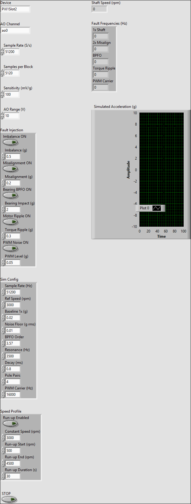
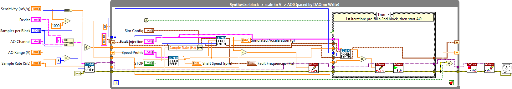

eDyno NVH accelerometer SIMULATOR - analog output only (PXIe-4468 AO0).
Continuously generates, with NI-DAQmx and regeneration disabled, a voltage that emulates a PCB 356A15 ICP accelerometer (one axis, Sensitivity mV/g, default 100) on an e-bike drive unit on the eDyno. Acquisition and analysis are deliberately NOT here: run them in a separate VI on any AI channel wired to AO0 (with IEPE excitation OFF on that channel - never drive an AO into an IEPE-powered input).
Speed: constant, or a linear run-up when Speed Profile / Run-up Enabled is ON; every order tracks speed. Switch faults on live in Fault Injection:
1) Imbalance (1x order, grows with rpm^2) / Misalignment (2x order)
2) Bearing outer-race defect (impacts at BPFO ringing the housing resonance: crest factor and kurtosis rise, BPFO-spaced lines around the resonance)
3) Motor torque ripple (6 x pole pairs order) and inverter PWM carrier with +/-2fe sidebands.
Fault Frequencies shows where each fault should appear at the current speed (the answer key for the analysis VI).
Timing: the AO buffer holds 3 blocks and DAQmx Write blocks when it is full, so the loop is paced by the hardware clock and a front-panel change reaches the output within about 3 x (Samples per Block / Sample Rate).

